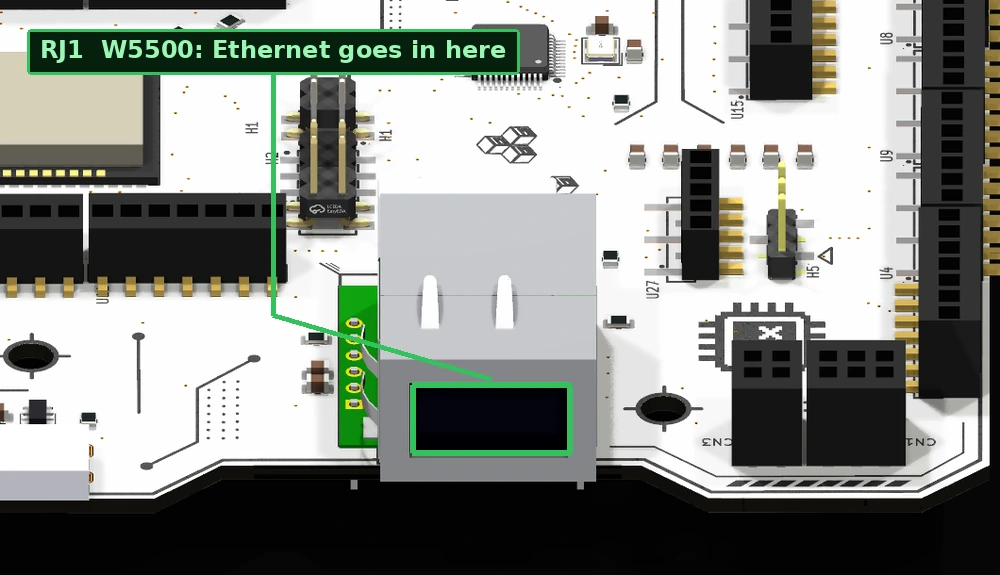

Compatriot bridges a real CAN bus over Ethernet, so standard Linux SocketCAN tools like
candump, cansend and isotpsend/isotprecv
work against it exactly like they would against a real car. A small UDS diagnostic stack
runs on top: request ID 0x7E0, response 0x7E8. All six
challenges auto-solve the instant the badge sees the correct interaction on the bus.
Already on the Arsenal Labs kit? All of this is
preinstalled there. Skip straight to Bus setup below.
Install the tools
3 installs
You'll need a Linux machine (a VM is fine) with a terminal open. A terminal is
just a window where you type a command and press Enter to run it. Every
command below is meant to be typed or pasted exactly as shown, one line at a
time.
can-utils, for candump, cansend and friends:
sudo apt install can-utils
cannelloni, the CAN-over-Ethernet bridge. It isn't a distro package, so
it's built from source. Paste this whole block, it clones, builds, and
installs it in one go:
sudo apt install build-essential cmake libsctp-dev
git clone https://github.com/mguentner/cannelloni.git
cd cannelloni && mkdir build && cd build
cmake .. && make
sudo make install
isotpsend / isotprecv, needed for Find the VIN, usually ship inside
can-utils too. Confirm you have them:
which isotpsend isotprecv
If that prints nothing, they weren't bundled on your distro's can-utils
package. They're part of the same can-utils source repo, build the whole repo
from
github.com/linux-can/can-utils
the same way as cannelloni above if you need to.
Bus setup
The badge is a W5500 Ethernet module speaking cannelloni (CAN-over-Ethernet) at
a static IP. Bridge it to a local vcan0 interface, once per session, and
every SocketCAN tool on your machine sees the badge's live bus.
Do this once per session, in order:
Plug an Ethernet cable between your computer and the badge's RJ45 jack. Any
cable works, modern network cards handle the crossover automatically.
Find your Ethernet interface's name:
ip link show
Look for the wired one, often something like eth0 or
enp2s0. Use that name in place of <iface> below.
Give it an address on the badge's subnet:
sudo ip addr add 10.42.0.1/24 dev <iface>
sudo ip link set <iface> up
Confirm the badge answers:
ping -c3 10.42.0.10
If this fails, check the cable and that the previous step actually assigned the
address (ip addr show <iface> should list it).
Create the virtual CAN interface:
sudo ip link add vcan0 type vcan
sudo ip link set up vcan0
Start the bridge and leave it running in this terminal, don't close it:
You should see four IDs repeating at roughly 10 Hz. If you see nothing, go back
and recheck the earlier steps before trying any individual challenge.

RJ1, the WIZ850io (W5500) module. Your Ethernet cable goes into the socket facing the board edge.
CAN ID
Signal
Layout
0x244
Speed
bytes 3-4, big-endian, km/h
0x316
RPM
engine RPM
0x188
Turn signals
byte 0, bit0 left, bit1 right
0x19B
Doors
byte 2, bits 0-3, FL/FR/RL/RR
Two terminals, the whole time. Terminal 1 keeps
cannelloni running and untouched for your entire session. Terminal 2 is
where you actually run candump/cansend/etc. for every
challenge below. If a command below seems to hang or do nothing, check terminal 1
is still alive first.
01
Floor It
Easy
The dashboard's speed reading comes off one CAN ID, and nothing checks whether that
frame actually came from the badge's own sensors. Find the ID, work out the byte
layout against a couple of known speed readings, and forge a value past the badge's
limiter threshold. No flag entry needed, it auto-solves the moment the frame lands.
Tool
candump / cansend (can-utils).
Hint
Only four IDs show up on the bus at all. One of them changes in step with the
number on the badge's own speedometer. Candump both and compare.
Full guide
With cannelloni still running in its own terminal (see Bus
setup above), open a second terminal and run candump vcan0.
Watch for the ID that tracks the badge's on-screen speedometer:
0x244.
Decode the layout: bytes 3-4, big-endian. 120 km/h is 0x0078.
In that same second terminal, send it: cansend vcan0 244#0000000078
The badge shows SOLVED immediately. No flag entry needed.
02
Tester Present
Easy
The simplest valid UDS request there is. Real diagnostic tools send it
periodically to keep a session alive. Here it's proof you can form a correctly
structured request at all. The badge checks the actual service ID and
sub-function, not just that something arrived on 0x7E0. One
correctly-formed frame is the whole interaction.
Tool
cansend. The badge parses raw ISO-TP single frames, so every byte
string below starts with a length byte (the frame's PCI byte, 0N
where N is how many UDS bytes follow), then the UDS service ID and sub-function.
Look up UDS service 0x3E and its expected sub-function byte.
Hint
Three bytes, sent once, to the request ID: a length byte, then the service
byte, then zero.
That's the whole interaction, a single correctly-formed frame.
The badge shows SOLVED immediately. Optionally confirm the ECU's ack
(02 7E 00) on 0x7E8 with candump vcan0.
03
Both Indicators
Easy
Get left and right turn signals active at the same moment. The badge's own UI
can't do this, since it only ever cycles one at a time. Watch the indicator's CAN
ID with the badge's own controls to see the bitfield only ever carries one bit,
then forge a frame with both set together.
Tool
candump to observe, cansend to inject.
Hint
Same ID as the indicator stalk. Watch the byte that changes when you tap left vs
right on the badge, then combine both values with a bitwise OR.
Full guide
Run candump vcan0 and toggle the indicator on the badge's Vehicle
tab a few times. 0x188 only ever carries 01 (left) or
02 (right), never 03.
Forge a frame with both bits set: cansend vcan0 188#03
The badge shows SOLVED immediately, and the dashboard briefly shows both
indicators active.
04
Find the VIN
Medium
A real UDS ReadDataByIdentifier request for the vehicle's VIN. The
20-byte answer doesn't fit one CAN frame, so the ECU splits it over an
ISO-TP First Frame and Consecutive Frames, and needs a Flow Control frame
back from you to send the rest. Plain cansend/candump
can't complete this alone. Recovering the VIN is only half the job. It's a real,
correctly-formatted VIN belonging to an actual production car, and the flag is
that car's name. Decode the VIN's manufacturer code (its first three characters)
with any free VIN decoder to find it.
Tool
Something that speaks ISO-TP and handles the Flow Control handshake for you:
isotpsend/isotprecv, or python-can with
can-isotp, or cantools.
If a receive call hangs, check that your Flow Control is going out
on the request ID, not the response ID. ISO-TP flow control always flows opposite
the data.
Hint
Look up the UDS service for reading a data identifier, and the standard
identifier a VIN is stored under — both are in ISO 14229. Once you have
the 17 characters, the first three tell you who built the car.
Full guide locked
05
Seed & Key
Hard
A real UDS SecurityAccess seed/key handshake, gated behind an
extended diagnostic session. Requesting a seed before opening that session gets
refused outright. Once you're in the extended session, a request returns a fresh
random seed each time. The badge gives two worked example seed/key pairs, and the
relationship between each pair is identical across both. Find it, then apply it
to your own live seed to compute the key.
Tool
cansend/candump and a calculator.
A wrong key invalidates the outstanding seed. Request a fresh one
and try again. No lockout, but every wrong guess costs a round trip.
Hint
XOR each example pair together. If you get the same result both times, that
result is the constant the badge uses on every seed, including yours.
Full guide locked
06
Memory Transfer
Hard
Picks up where Seed & Key left off. The ECU keeps a short calibration token
tucked away in memory, and a separate register that unlocks the moment it sees that
exact token written into it. Your job is to move one into the other.
Memory is off limits until the ECU is already unlocked, and the token is regenerated
every time the badge boots — so you have to read yours off the live bus. Nobody
else's value will work.
Tool
cansend/candump, plus the SecurityAccess unlock you worked out
in Seed & Key.
This ECU is fussy about how you ask. It accepts exactly one address/length
format and exactly one writable destination; everything else is refused. When it refuses,
read the negative response code it sends back — it tells you whether you are locked
out or simply asking the wrong way.
Hint
Get through SecurityAccess first; nothing below works while the ECU is locked.
UDS has one service for reading memory and another for writing it — look them up
in ISO 14229. Both take an address-and-length format byte before the address
itself, and this ECU only tolerates the smallest form of it. Dump the memory region
the objective points at, then put what you find where it belongs.